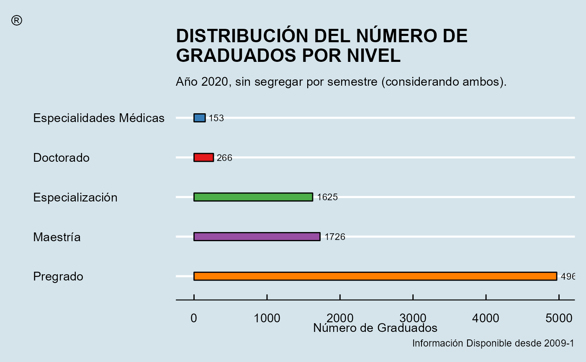

Cree un gráfico de barras que muestre la información de forma horizontal o vertical, para variables nominales u ordinales con dos diferentes paquetes
Plot.Barras.RdEsta función permite mostrar de forma interactiva (y estática) un gráfico
de barras verticales u horizontales cuya altura/longitud es proporcional al
valor de la variable (categorías de una variable cualitativa), lo anterior
para ayudar a la creación de informes descriptivos y analíticos. Dicho diagrama
se puede representar usando dos diferentes librerías que son Highcharter y
Plotly, las cuales usan internamente JavaScript.
Uso
Plot.Barras(
datos,
valores,
categoria,
ano,
periodo,
freqRelativa = FALSE,
ylim,
vertical = TRUE,
ordinal = FALSE,
colores,
titulo = "",
labelX = "",
labelY = "Número de",
labelEje,
addPeriodo = FALSE,
textInfo = labelY,
libreria = c("highcharter", "plotly"),
estilo = NULL,
estatico = FALSE
)Argumentos
- datos
Un data frame, no un vector numérico.
- valores
Variable numérica que contiene los valores que desea graficar.
- categoria
Una variable categórica dentro del data frame ingresado en
datos.- ano
Argument deprecated. This Argument still exist but will be removed in the next version.
- periodo
Argument deprecated. This Argument still exist but will be removed in the next version.
- freqRelativa
Si es
FALSE(valor predeterminado) la serie graficada representará las frecuencias absolutas (conteo) más no las relativas (porcentaje).- ylim
Vector numérico que especifica el límite inferior y superior, respectivamente, del eje
Y. Si no se introduce algún valor se mostrará todo el rango disponible para dicho eje.- vertical
Si es
TRUE(valor predeterminado) indicará que la orientación del gráfico será vertical.- ordinal
Si es
TRUEindicará que las categorías de la variable ingresada son ordinales (no nominales), esto con el fin de ordenar la disposición en el que se presentan en el eje del gráfico, el valor por defecto esFALSE.- colores
Cadena de caracteres indicando los colores con los cuales se deben colorear cada una de las series correspondiente a cada nivel del argumento
categoria. Si no se introduce algún vector se usará la paletarainbowpor defecto.- titulo
Cadena de caracteres indicando el título principal del plot.
- labelX
Cadena de caracteres indicando la etiqueta del eje
X. Por defecto se emplea el rótulo "Periodo".- labelY
Cadena de caracteres indicando la etiqueta del eje
Y.- labelEje
Cadena de caracteres indicando la etiqueta del eje
XoY(dependiendo de la orientación del gráfico). Por defecto se emplea el rótulo"Número de ".- addPeriodo
Argument deprecated. This Argument still exist but will be removed in the next version.
- textInfo
Cadena de caracteres que especifica el texto que se escribe dentro de la caja de información al posar el cursor en alguna barra en el gráfico, producido por
Highcharter, el valor por defecto es igual al delabelX.- libreria
Cadena de caracteres que indica el paquete con el cual se realizará el plot. Los valores permitidos son
"highcharter"(valor predeterminado) y"plotly". Los valores se emparejarán parcialmente.- estilo
Lista compuesta por varios parámetros, los cuales van a ser usados de acuerdo con la librería especificada para graficar el plot y cuyo objetivo es personalizar pequeños detalles de ésta.
hc.Tema,hc.Credits,ply.Credits,gg.Temaygg.Texto: Igual uso que enPlot.Series()ply.Legend: Por defecto la gráfica muestra la leyenda fuera del gráfico de pie, si se introduce la cadena de texto"inside"se resumirá toda la información dentro del pie.gg.Bar: Una lista de parámetros admitidos por la función geom_bar()).
- estatico
Si es
FALSE(valor predeterminado) el gráfico a retornar será dinámico (dependiendo de la librería seleccionada), en caso contrario se retornará un gráfico estático construido conggplot2.
Valor
Retorna el diagrama de barras (objeto widget de HTML) creado. La clase del objeto retornado será un "htmlwidget" y dependiendo de la librería usada pertenecerá adicionalmente a la clase "highchart" o "plotly".
Detalles
Al usar el paquete Highcharter y usar las opciones de descarga, el nombre
del archivo descargado será la concatenación del plot graficado y la categoría
usada, así, por ejemplo, si se graficó el diagrama de barras para la categoría
"Nacionalidad" el nombre será PlotBarras_Nacionalidad.png.
Lista de argumentos de estilo
Sabemos que puede ser abrumador el número de argumentos dentro del parámetro
estilo, pero es necesario si queremos ofrecer al usuario la máxima
personalización dentro de cada función usando cualquier librería. Por tal
razón, a continuación, se detalla el listado completo de argumentos, usados
al especificar la librería y en qué función están presentes
(marcado con una × si lo posee).
| Librería | estilo$ | Plot.Series() | Plot.Barras() | Plot.Apiladas() | Plot.Boxplot() | Plot.Radar() | Plot.Treemap() | Plot.Torta() | Plot.Drilldown() |
| — | gg.Tema | × | × | × | × | ||||
| l | gg.Texto | × | × | × | × | ||||
| l | gg.Legend | × | × | × | |||||
| l | gg.Linea | × | |||||||
| l | gg.Punto | × | |||||||
| l | gg.Bar | × | × | ||||||
| l | gg.VarWidth | × | |||||||
| l | gg.OutShape | × | |||||||
| l | gg.JitWidth | × | |||||||
| l | gg.JitSize | × | |||||||
| l | gg.Range | × | |||||||
| ggplot2 | gg.plty | × | |||||||
| l | gg.plwd | × | |||||||
| l | gg.cglwd | × | |||||||
| l | gg.cglcol | × | |||||||
| l | gg.fontsize.title | × | |||||||
| l | gg.fontsize.labels | × | |||||||
| l | gg.fontcolor.labels | × | |||||||
| l | gg.border.lwds | × | |||||||
| l | gg.border.col | × | |||||||
| l | gg.lowerbound.cex.labels | × | |||||||
| l | gg.force.print.labels | × | |||||||
| — | gg.overlap.labels | × | |||||||
| » | hc.Tema | × | × | × | × | × | × | × | |
| l | hc.Credits | × | × | × | × | × | × | × | |
| highcharter | hc.BoxInfo | × | |||||||
| l | hc.Slider | × | |||||||
| » | hc.borderRadius | × | |||||||
| • | ply.Credits | × | × | × | × | × | × | × | |
| ° | ply.Legend | × | × | ||||||
| ° | ply.LegendPosition | × | × | × | × | ||||
| plotly | ply.Interaction | × | × | ||||||
| ° | ply.Relleno | × | |||||||
| ° | ply.Opacidad | × | × | ||||||
| • | ply.LegendTitle | × | |||||||
| dygraphs | dyg.LegendWidth | × | |||||||
| » | dyg.Resaltar | × | |||||||
| — | e.Tema | × | |||||||
| l | e.Credits | × | |||||||
| echarts4r | e.Forma | × | |||||||
| l | e.LegType | × | |||||||
| — | e.LegLoc | × |
Ejemplos
# Ejemplo generalizado (sin uso de un consolidado como input)
# library("tibble"); library("dplyr")
set.seed(42)
Blood <- tibble(
Group = sample(c("O", "A", "B", "AB"), size = 200, prob = c(0.5, 0.3, 0.16, 0.4), replace = TRUE),
RH = sample(c("+", "-"), size = 200, replace = TRUE),
Prevalence = round(runif(200)*100)
)
Plot.Barras(
datos = Blood ,
valores = Prevalence,
categoria = Group ,
ordinal = TRUE ,
colores = c("#FF553D", "#A5FF67", "#40D2FF", "#FFDB5C"),
labelY = "Prevalence"
)
#> Warning: ¡Se usará la librería 'highcharter' por defecto para realizar el plot!
Plot.Barras(
datos = Blood ,
valores = Prevalence,
categoria = Group ,
colores = c("#FF553D", "#A5FF67", "#40D2FF", "#FFDB5C"),
labelY = "Prevalence",
libreria = "plotly"
)
# ---------------------------------------------------------------------------
Msj <- "Ac\u00e1 puede ir m\u00e1s informaci\u00f3n acerca del gr\u00e1fico."
Plot.Barras(
datos = ejConsolidadoGrad |> filter(YEAR==2021, SEMESTRE==1),
categoria = "NIVEL",
freqRelativa = TRUE,
vertical = TRUE,
ordinal = TRUE,
colores = c("#D7191C", "#FDAE61", "#FFFFBF", "#ABDDA4", "#2B83BA"),
titulo = "GRADUADOS DE ACUERDO CON EL NIVEL DE FORMACI\u00d3N (Periodo 2021-1)",
labelY = "Frecuencia Relativa<br>(% de graduados)",
textInfo = "Porcentaje de Graduados",
libreria = "highcharter",
estilo = list(hc.Tema = 2, hc.Credits = Msj)
)
# ---------------------------------------------------------------------------
Txt <- "DISTRIBUCI\u00d3N DEL N\u00daMERO DE GRADUADOS POR NIVEL"
Msj <- "A\u00f1o 2020, sin segregar por semestre (considerando ambos)."
Plot.Barras(
datos = ejConsolidadoGrad |> filter(YEAR == 2020),
categoria = "NIVEL",
vertical = FALSE,
ordinal = FALSE,
colores = c("#66C2A5", "#FC8D62", "#8DA0CB", "#E78AC3", "#A6D854"),
titulo = Txt,
labelY = "N\u00famero de Graduados",
libreria = "plotly",
estilo = list(
ply.Credits = list(x = 0.45, y = 1.1, text = Msj), ply.Legend = FALSE
)
)
# ---------------------------------------------------------------------------
# Ejemplo usando el caso estático (ggplot2)
Plot.Barras(
datos = ejConsolidadoGrad |> filter(YEAR == 2020),
categoria = "NIVEL",
vertical = FALSE,
ordinal = FALSE,
colores = c("#E41A1C", "#377EB8", "#4DAF4A", "#984EA3", "#FF7F00"),
titulo = gsub("DE GR", "DE\nGR", Txt),
labelY = "N\u00famero de Graduados",
estatico = TRUE,
estilo = list(
gg.Tema = 10,
gg.Bar = list(width = 0.2, color = "#000000"),
gg.Texto = list(subtitle = gsub("A", "\nA", Msj),
caption = "Informaci\u00f3n Disponible desde 2009-1",
tag = "\u00ae"
)
)
)
